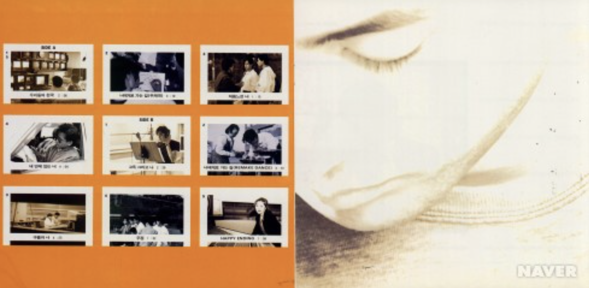
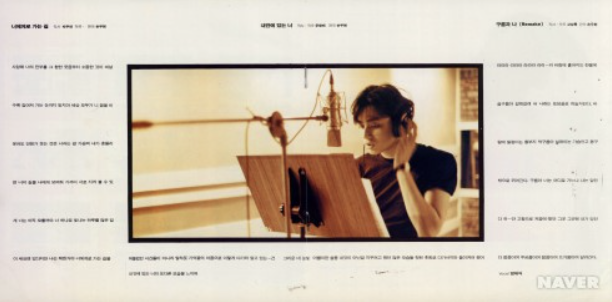
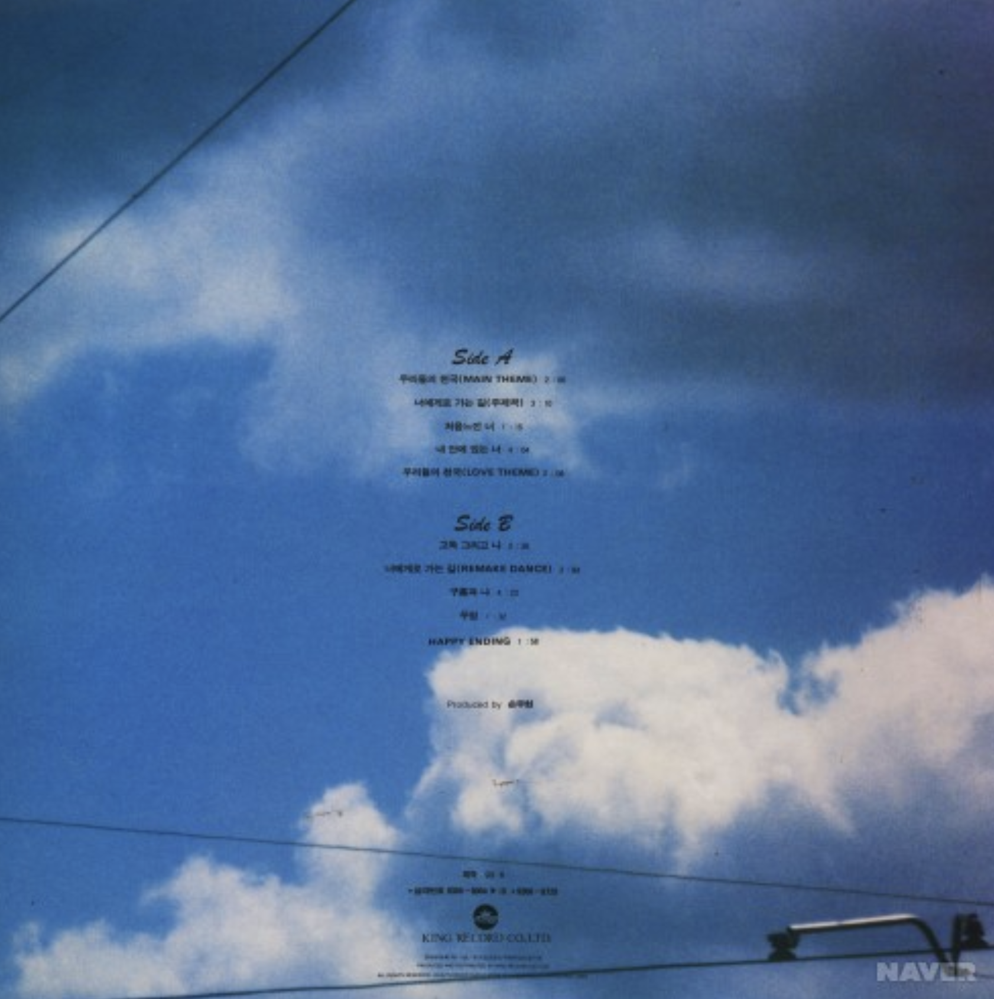

우리들의 천국 OST
<1993>
가수 소개
국내 대표적인 조각 미남으로 불리며 데뷔 초부터 압도적인 외모와 철저한 자기관리로 톱스타의 자리를 지켜온 배우 장동건은, 초기에는 외모에 가려 연기력을 저평가받기도 했으나 꾸준한 작품 활동을 통해 연기력을 인정받으며 청룡영화상에서 신인상·조연상·주연상을 모두 석권한 유일무이한 배우 중 한 명으로 자리매김했습니다.
앨범소개
배우 장동건이 첫 주연으로 발탁된 MBC 드라마 「우리들의 천국」의 세 가지 버전 OST 중 장동건 독집으로 발매한 음반이다. 수록곡 중 <너에게로 가는 길>이 히트했다. 이 음반은 배우 장동건의 첫 가수 도전 작품이라는 점에서 의미가 있다
🎵


